This can be used to simulate fires, seed dispersal, calculation of iterative,
concentric landscape values (symmetric or asymmetric) and many other things.
Essentially, it starts from a collection of cells (loci) and spreads
to neighbours, according to the directions and spreadProb arguments.
This can become quite general, if spreadProb is 1 as it will expand
from every loci until all cells in the landscape have been covered.
With id set to TRUE, the resulting map will be classified
by the index of the cell where that event propagated from.
This can be used to examine things like fire size distributions.
NOTE: See also spread2, which is more robust and can be
used to build custom functions.
However, under some conditions, this spread function is faster.
The two functions can accomplish many of the same things, and key differences
are internal.
spread(landscape, loci = NA_real_, spreadProb = 0.23, persistence = 0, mask = NA, maxSize = 100000000L, directions = 8L, iterations = 1000000L, lowMemory = getOption("spades.lowMemory"), returnIndices = FALSE, returnDistances = FALSE, mapID = NULL, id = FALSE, plot.it = FALSE, spreadProbLater = NA_real_, spreadState = NA, circle = FALSE, circleMaxRadius = NA_real_, stopRule = NA, stopRuleBehavior = "includeRing", allowOverlap = FALSE, asymmetry = NA_real_, asymmetryAngle = NA_real_, quick = FALSE, neighProbs = NULL, exactSizes = FALSE, relativeSpreadProb = FALSE, ...) # S4 method for RasterLayer spread(landscape, loci = NA_real_, spreadProb = 0.23, persistence = 0, mask = NA, maxSize = 100000000L, directions = 8L, iterations = 1000000L, lowMemory = getOption("spades.lowMemory"), returnIndices = FALSE, returnDistances = FALSE, mapID = NULL, id = FALSE, plot.it = FALSE, spreadProbLater = NA_real_, spreadState = NA, circle = FALSE, circleMaxRadius = NA_real_, stopRule = NA, stopRuleBehavior = "includeRing", allowOverlap = FALSE, asymmetry = NA_real_, asymmetryAngle = NA_real_, quick = FALSE, neighProbs = NULL, exactSizes = FALSE, relativeSpreadProb = FALSE, ...)
| landscape | A |
|---|---|
| loci | A vector of locations in |
| spreadProb | Numeric, or |
| persistence | A length 1 probability that an active cell will continue to burn, per time step. |
| mask | non- |
| maxSize | Numeric. Maximum number of cells for a single or
all events to be spread. Recycled to match |
| directions | The number of adjacent cells in which to look; default is 8 (Queen case). Can only be 4 or 8. |
| iterations | Number of iterations to spread.
Leaving this |
| lowMemory | Logical. If true, then function uses package |
| returnIndices | Logical. Should the function return a |
| returnDistances | Logical. Should the function include a column with the
individual cell distances from the locus where that event
started. Default is |
| mapID | Deprecated. Use |
| id | Logical. If |
| plot.it | If |
| spreadProbLater | Numeric, or |
| spreadState |
|
| circle | Logical. If |
| circleMaxRadius | Numeric. A further way to stop the outward spread of events.
If |
| stopRule | A function which will be used to assess whether each
individual cluster should stop growing.
This function can be an argument of |
| stopRuleBehavior | Character. Can be one of |
| allowOverlap | Logical. If |
| asymmetry | A numeric indicating the ratio of the asymmetry to be used.
Default is |
| asymmetryAngle | A numeric indicating the angle in degrees (0 is "up",
as in North on a map), that describes which way the
|
| quick | Logical. If |
| neighProbs | A numeric vector, whose sum is 1.
It indicates the probabilities an individual spread iteration
spreading to |
| exactSizes | Logical. If |
| relativeSpreadProb | Logical. If |
| ... | Additional named vectors or named list of named vectors
required for |
Either a RasterLayer indicating the spread of the process in
the landscape or a data.table if returnIndices is TRUE.
If a RasterLayer, then it represents
every cell in which a successful spread event occurred. For the case of, say, a fire
this would represent every cell that burned. If allowOverlap is TRUE,
This RasterLayer will represent the sum of the individual event ids
(which are numerics seq_along(loci).
This will generally be of minimal use because it won't be possible to distinguish
if event 2 overlapped with event 5 or if it was just event 7.
If returnIndices is TRUE,
then this function returns a data.table with columns:
id |
an arbitrary ID 1:length(loci) identifying
unique clusters of spread events, i.e., all cells
that have been spread into that have a
common initial cell. |
initialLocus |
the initial cell number of that particular spread event. |
indices |
The cell indices of cells that have been touched by the spread algorithm. |
active |
a logical indicating whether the cell is active (i.e., could still be a source for spreading) or not (no spreading will occur from these cells). |
This will generally be more useful when allowOverlap is TRUE.
For large rasters, a combination of lowMemory = TRUE and
returnIndices = TRUE will use the least amount of memory.
This function can be interrupted before all active cells are exhausted if
the iterations value is reached before there are no more active
cells to spread into. If this is desired, returnIndices should be
TRUE and the output of this call can be passed subsequently as an input
to this same function. This is intended to be used for situations where external
events happen during a spread event, or where one or more arguments to the spread
function change before a spread event is completed. For example, if it is
desired that the spreadProb change before a spread event is completed because,
for example, a fire is spreading, and a new set of conditions arise due to
a change in weather.
asymmetry is currently used to modify the spreadProb in the following way.
First for each active cell, spreadProb is converted into a length 2 numeric of Low and High
spread probabilities for that cell:
spreadProbsLH <- (spreadProb*2) // (asymmetry+1)*c(1,asymmetry),
whose ratio is equal to
asymmetry.
Then, using asymmetryAngle, the angle between the
initial starting point of the event and all potential
cells is found. These are converted into a proportion of the angle from
-asymmetryAngle
to
asymmetryAngle
using:
angleQuality <- (cos(angles - rad(asymmetryAngle))+1)/2
These are then converted to multiple spreadProbs by
spreadProbs <- lowSpreadProb+(angleQuality * diff(spreadProbsLH))
To maintain an expected spreadProb that is the same as the asymmetric
spreadProbs, these are then rescaled so that the mean of the
asymmetric spreadProbs is always equal to spreadProb at every iteration:
spreadProbs <- spreadProbs - diff(c(spreadProb,mean(spreadProbs)))
There are 4 ways for the spread to "stop" spreading. Here, each "event" is defined as
all cells that are spawned from a single starting loci. So, one spread call can have
multiple spreading "events". The ways outlines below are all acting at all times,
i.e., they are not mutually exclusive. Therefore, it is the user's
responsibility to make sure the different rules are interacting with
each other correctly. Using spreadProb or maxSize are computationally
fastest, sometimes dramatically so.
spreadProb |
Probabilistically, if spreadProb is low enough, active spreading events will stop. In practice, active spreading events will stop. In practice, this number generally should be below 0.3 to actually see an event stop |
maxSize |
This is the number of cells that are "successfully" turned on during a spreading event. This can be vectorized, one value for each event |
circleMaxRadius |
If circle is TRUE, then this will be the maximum
radius reached, and then the event will stop. This is
vectorized, and if length is >1, it will be matched
in the order of loci |
stopRule |
This is a function that can use "landscape", "id", "cells",
or any named vector passed into spread in the ....
This can take on relatively complex functions.
Passing in, say, a RasterLayer to spread
can access the individual values on that arbitrary
RasterLayer using "cells".
These will be calculated within all the cells of the individual
event (equivalent to a "group_by(event)" in dplyr.
So, sum(arbitraryRaster[cells]) would sum up all
the raster values on the arbitraryRaster raster
that are overlaid by the individual event.
This can then be used in a logical statement. See examples.
To confirm the cause of stopping, the user can assess the values
after the function has finished. |
The spread function does not return the result of this stopRule. If,
say, an event has both circleMaxRadius and stopRule,
and it is
the circleMaxRadius that caused the event spreading to stop,
there will be no indicator returned from this function that indicates
which rule caused the stop.
stopRule has many use cases. One common use case is evaluating
a neighbourhood around a focal set of points. This provides,
therefore, an alternative to the buffer function or
focal function.
In both of those cases, the window/buffer size must be an input to the function. Here,
the resulting size can be emergent based on the incremental growing and calculating
of the landscape values underlying the spreading event.
This determines how the stopRule should be implemented. Because
spreading occurs outwards in concentric circles or shapes, one cell width at a time, there
are 4 possible ways to interpret the logical inequality defined in stopRule.
In order of number of cells included in resulting events, from most cells to fewest cells:
"includeRing" |
Will include the entire ring of cells that, as a group,
caused stopRule to be TRUE. |
"includePixel" |
Working backwards from the entire ring that caused the
stopRule to be TRUE, this will iteratively
random cells in the final ring
until the stopRule is FALSE. This will add back
the last removed cell and include it in the return result
for that event. |
"excludePixel" |
Like "includePixel", but it will not add back the cell
that causes stopRule to be TRUE |
"excludeRing" |
Analogous to "excludePixel", but for the entire final
ring of cells added. This will exclude the entire ring of cells
that caused the stopRule to be TRUE |
spread2 for a different implementation of the same alogorithm.
It is more robust, meaning, there will be fewer unexplainable errors, and the behaviour
has been better tested, so it is more likely to be exactly as described under all
argument combinations.
Also, rings which uses spread but with specific argument
values selected for a specific purpose.
distanceFromPoints.
cir to create "circles"; it is fast for many small problems.
library(raster) library(RColorBrewer) library(quickPlot) # Make random forest cover map set.seed(123) emptyRas <- raster(extent(0, 1e2, 0, 1e2), res = 1) hab <- randomPolygons(emptyRas, numTypes = 40) names(hab) <- "hab" mask <- raster(emptyRas) mask <- setValues(mask, 0) mask[1:5000] <- 1 numCol <- ncol(emptyRas) numCell <- ncell(emptyRas) directions <- 8 # Can use transparent as a color setColors(hab) <- paste(c("transparent", brewer.pal(8, "Greys"))) # note speedup is equivalent to making pyramids, so, some details are lost clearPlot()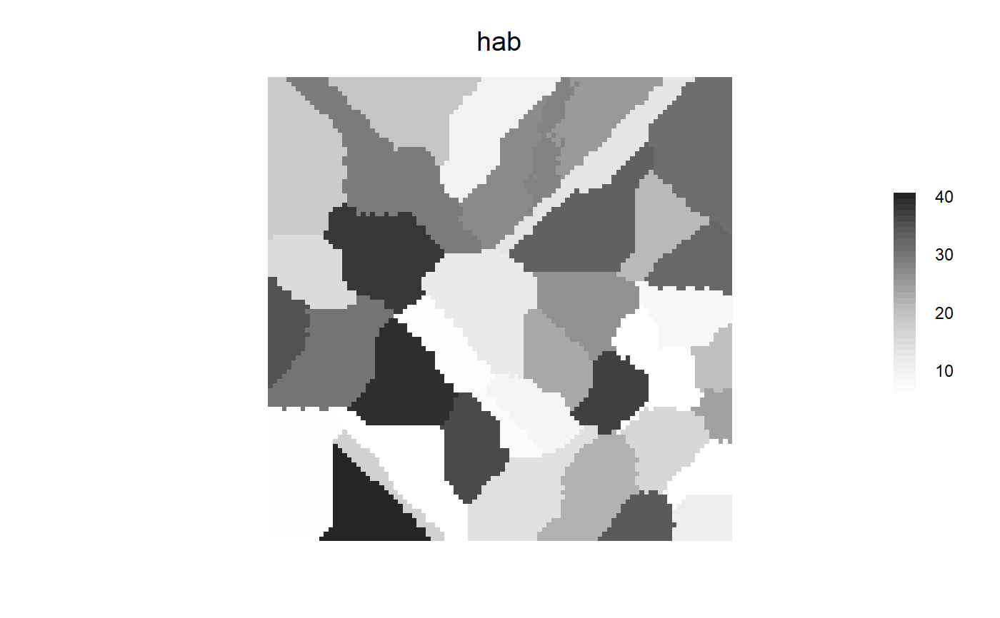# initiate 10 fires startCells <- as.integer(sample(1:ncell(emptyRas), 100)) fires <- spread(hab, loci = startCells, 0.235, persistence = 0, numNeighs = 2, mask = NULL, maxSize = 1e8, directions = 8, iterations = 1e6, id = TRUE) #set colors of raster, including a transparent layer for zeros setColors(fires, 10) <- c("transparent", brewer.pal(8, "Reds")[5:8]) Plot(fires)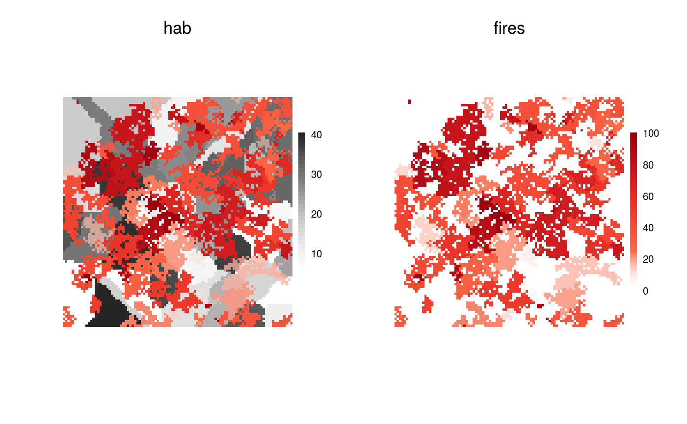#alternatively, set colors using cols= in the Plot function clearPlot()Plot(hab)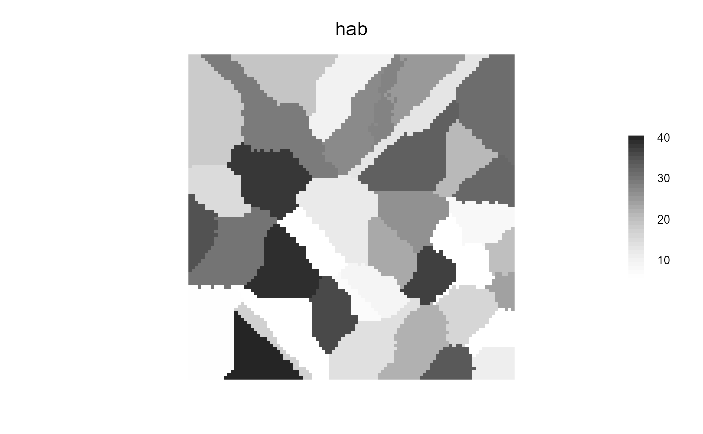# Instead, to give a color to the zero values, use \code{zero.color=} Plot(fires, addTo = "hab", cols = colorRampPalette(c("orange", "darkred"))(10), zero.color = "transparent")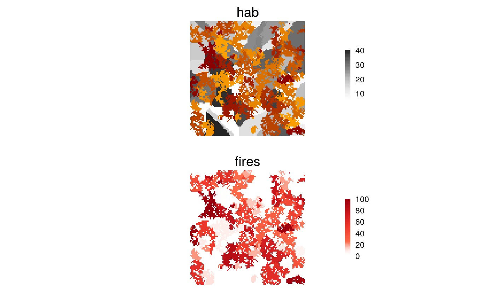Plot(fires, addTo = "hab2", zero.color = "transparent", cols = colorRampPalette(c("orange", "darkred"))(10))# or overplot the original (NOTE: legend stays at original values) Plot(fires, cols = topo.colors(10), new = TRUE, zero.color = "white")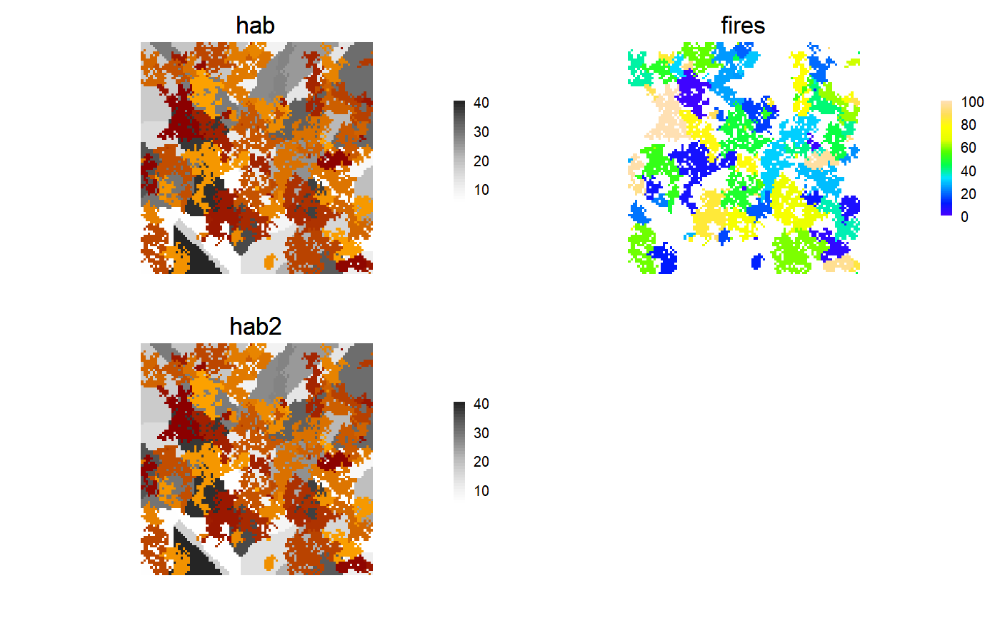##------------------------------------------------------------------------------ ## Continue event by passing interrupted object into spreadState ##------------------------------------------------------------------------------ ## Interrupt a spread event using iterations - need `returnIndices = TRUE` to ## use outputs as new inputs in next iteration fires <- spread(hab, loci = as.integer(sample(1:ncell(hab), 10)), returnIndices = TRUE, 0.235, 0, NULL, 1e8, 8, iterations = 3, id = TRUE) fires[, list(size = length(initialLocus)), by = id] # See sizes of fires#> id size #> 1: 1 11 #> 2: 2 19 #> 3: 3 10 #> 4: 4 12 #> 5: 5 16 #> 6: 6 23 #> 7: 7 22 #> 8: 8 8 #> 9: 9 6 #> 10: 10 21fires2 <- spread(hab, loci = NA_real_, returnIndices = TRUE, 0.235, 0, NULL, 1e8, 8, iterations = 2, id = TRUE, spreadState = fires) # NOTE events are assigned arbitrary IDs, starting at 1 ## Add new fires to the already burning fires fires3 <- spread(hab, loci = as.integer(sample(1:ncell(hab), 10)), returnIndices = TRUE, 0.235, 0, NULL, 1e8, 8, iterations = 1, id = TRUE, spreadState = fires) fires3[, list(size = length(initialLocus)), by = id] # See sizes of fires#> id size #> 1: 1 9 #> 2: 2 23 #> 3: 3 10 #> 4: 4 10 #> 5: 5 13 #> 6: 6 25 #> 7: 7 20 #> 8: 8 7 #> 9: 9 7 #> 10: 10 24# NOTE old ids are maintained, new events get ids begining above previous # maximum (e.g., new fires 11 to 20 here) ## Use data.table and loci... fires <- spread(hab, loci = as.integer(sample(1:ncell(hab), 10)), returnIndices = TRUE, 0.235, 0, NULL, 1e8, 8, iterations = 2, id = TRUE) fullRas <- raster(hab) fullRas[] <- 1:ncell(hab) burned <- fires[active == FALSE] burnedMap <- rasterizeReduced(burned, fullRas, "id", "indices") clearPlot()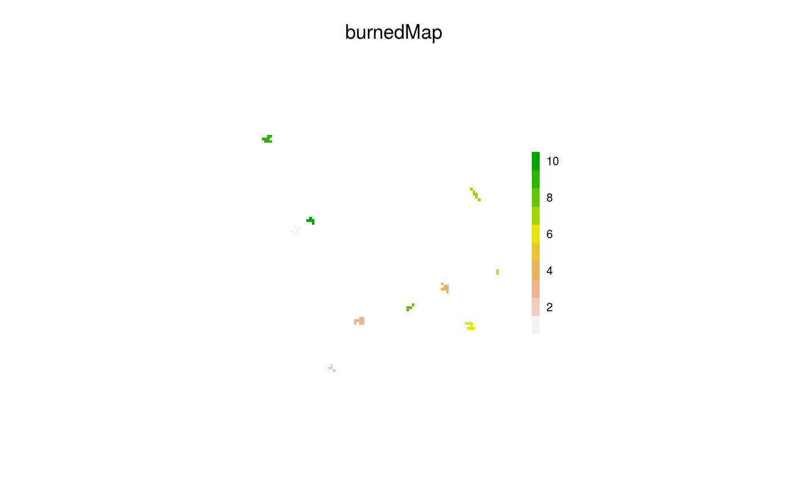#################### ## stopRule examples #################### # examples with stopRule, which means that the eventual size is driven by the values on the raster # passed in to the landscape argument set.seed(1234) stopRule1 <- function(landscape) sum(landscape) > 50 stopRuleA <- spread(hab, loci = as.integer(sample(1:ncell(hab), 10)), 1, 0, NULL, maxSize = 1e6, 8, 1e6, id = TRUE, circle = TRUE, stopRule = stopRule1) set.seed(1234) stopRule2 <- function(landscape) sum(landscape) > 100 # using stopRuleBehavior = "excludePixel" stopRuleB <- spread(hab, loci = as.integer(sample(1:ncell(hab), 10)), 1, 0, NULL, maxSize = 1e6, 8, 1e6, id = TRUE, circle = TRUE, stopRule = stopRule2, stopRuleBehavior = "excludePixel") # using stopRuleBehavior = "includeRing", means that end result is slightly larger patches, as a # complete "iteration" of the spread algorithm is used. set.seed(1234) stopRuleBNotExact <- spread(hab, loci = as.integer(sample(1:ncell(hab), 10)), 1, 0, NULL, maxSize = 1e6, 8, 1e6, id = TRUE, circle = TRUE, stopRule = stopRule2) clearPlot()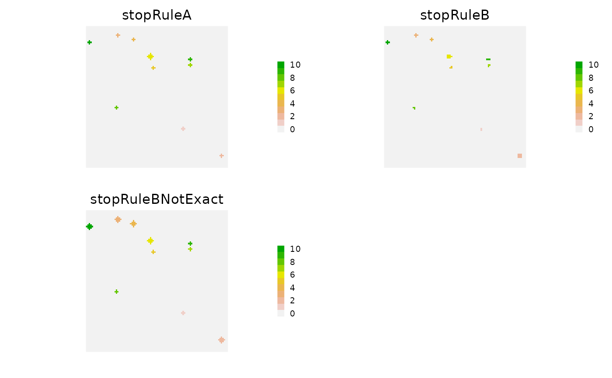# Test that the stopRules work # stopRuleA was not exact, so each value will "overshoot" the stopRule, here it was hab>50 foo <- cbind(vals = hab[stopRuleA], id = stopRuleA[stopRuleA > 0]); tapply(foo[, "vals"], foo[, "id"], sum) # Correct ... all are above 50#> 1 2 3 4 5 6 7 8 9 10 #> 95 159 52 195 78 80 124 145 131 84# stopRuleB was exact, so each value will be as close as possible while rule still is TRUE # Because we have discrete cells, these numbers will always slightly under the rule foo <- cbind(vals = hab[stopRuleB], id = stopRuleB[stopRuleB > 0]); tapply(foo[, "vals"], foo[, "id"], sum) # Correct ... all are above 50#> 1 2 3 4 5 6 7 8 9 10 #> 95 90 100 78 96 100 93 87 95 90# stopRuleB_notExact will overshoot foo <- cbind(vals = hab[stopRuleBNotExact], id = stopRuleBNotExact[stopRuleBNotExact > 0]); tapply(foo[, "vals"], foo[, "id"], sum) # Correct ... all are above 50#> 1 2 3 4 5 6 7 8 9 10 #> 238 159 148 195 174 180 124 145 131 186# Cellular automata shapes # Diamonds - can make them with: a boolean raster, directions = 4, # stopRule in place, spreadProb = 1 diamonds <- spread(hab > 0, spreadProb = 1, directions = 4, id = TRUE, stopRule = stopRule2) clearPlot()Plot(diamonds)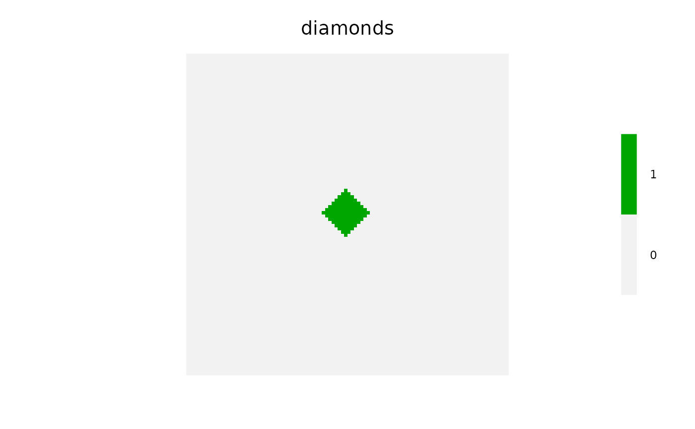# Squares - can make them with: a boolean raster, directions = 8, # stopRule in place, spreadProb = 1 squares <- spread(hab > 0, spreadProb = 1, directions = 8, id = TRUE, stopRule = stopRule2) Plot(squares)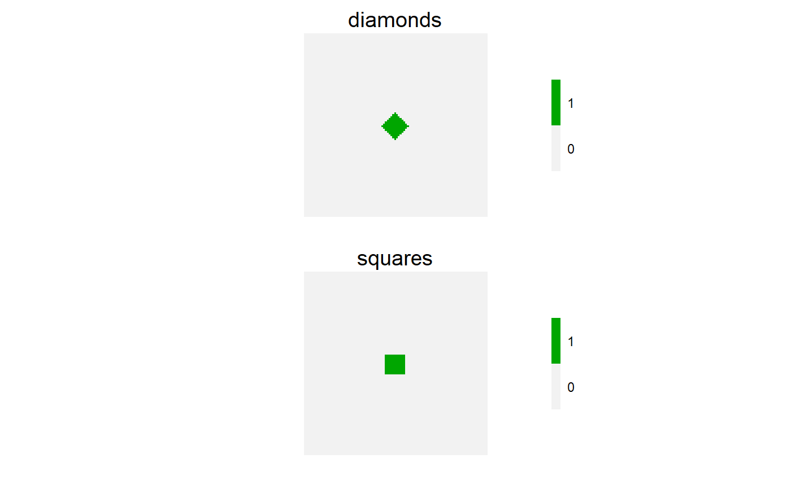# Interference shapes - can make them with: a boolean raster, directions = 8, # stopRule in place, spreadProb = 1 stopRule2 <- function(landscape) sum(landscape) > 200 squashedDiamonds <- spread(hab > 0, spreadProb = 1, loci = (ncell(hab) - ncol(hab)) / 2 + c(4, -4), directions = 4, id = TRUE, stopRule = stopRule2) clearPlot()Plot(squashedDiamonds)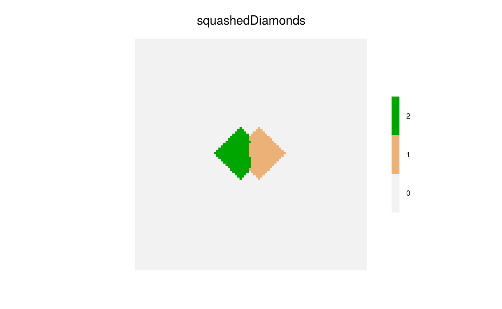# Circles with spreadProb < 1 will give "more" circular shapes, but definitely not circles stopRule2 <- function(landscape) sum(landscape) > 200 seed <- sample(1e4, 1) set.seed(seed) circlish <- spread(hab > 0, spreadProb = 0.23, loci = (ncell(hab) - ncol(hab)) / 2 + c(4, -4), directions = 8, id = TRUE, circle = TRUE)#, stopRule = stopRule2) set.seed(seed) regularCA <- spread(hab > 0, spreadProb = 0.23, loci = (ncell(hab) - ncol(hab)) / 2 + c(4, -4), directions = 8, id = TRUE)#, stopRule = stopRule2) clearPlot()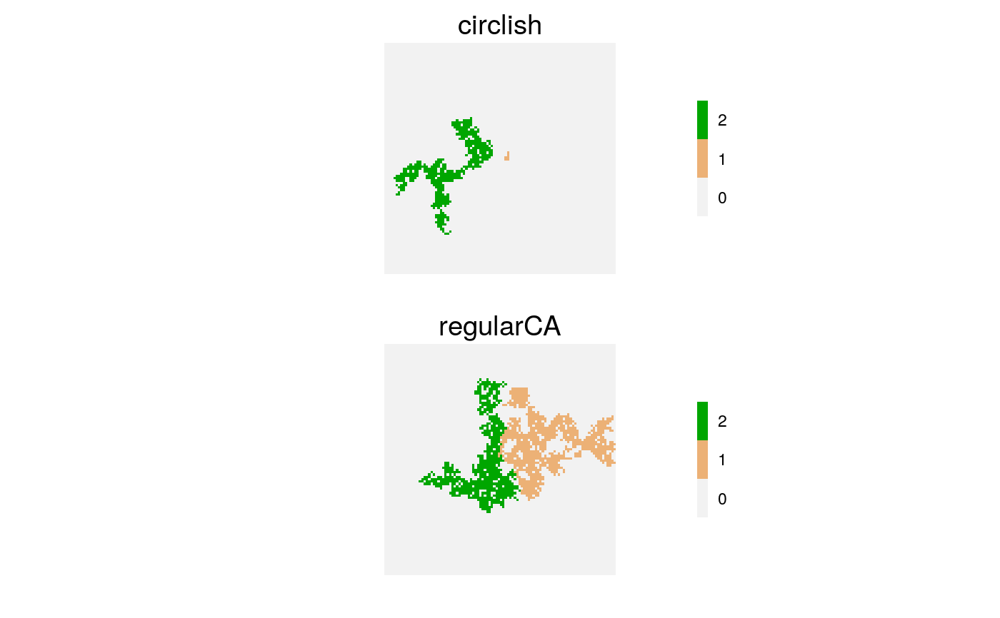#################### # complex stopRule #################### initialLoci <- sample(seq_len(ncell(hab)), 2) endSizes <- seq_along(initialLoci) * 200 # Can be a function of landscape, id, and/or any other named # variable passed into spread stopRule3 <- function(landscape, id, endSizes) sum(landscape) > endSizes[id] twoCirclesDiffSize <- spread(hab, spreadProb = 1, loci = initialLoci, circle = TRUE, directions = 8, id = TRUE, stopRule = stopRule3, endSizes = endSizes, stopRuleBehavior = "excludePixel") # or using named list of named elements: twoCirclesDiffSize2 <- spread(hab, spreadProb = 1, loci = initialLoci, circle = TRUE, directions = 8, id = TRUE, stopRule = stopRule3, vars = list(endSizes = endSizes), stopRuleBehavior = "excludePixel") identical(twoCirclesDiffSize, twoCirclesDiffSize2) ## TRUE#> [1] FALSEPlot(twoCirclesDiffSize)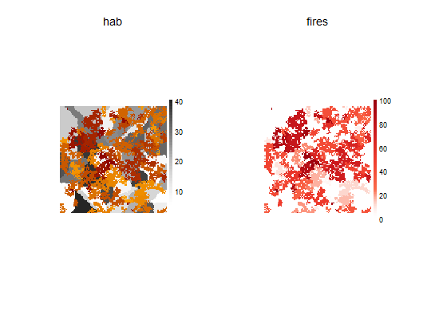cirs <- getValues(twoCirclesDiffSize) vals <- tapply(hab[twoCirclesDiffSize], cirs[cirs > 0], sum) # Stop if sum of landscape is big or mean of quality is too small quality <- raster(hab) quality[] <- runif(ncell(quality), 0, 1) stopRule4 <- function(landscape, quality, cells) { (sum(landscape) > 20) | (mean(quality[cells]) < 0.3) } twoCirclesDiffSize <- spread(hab, spreadProb = 1, loci = initialLoci, circle = TRUE, directions = 8, id = TRUE, stopRule = stopRule4, quality = quality, stopRuleBehavior = "excludePixel") ############## # allowOverlap ############## set.seed(3113) initialLoci <- as.integer(sample(1:ncell(hab), 10)) # using "landscape", "id", and a variable passed in maxVal <- rep(500, length(initialLoci)) # define stopRule stopRule2 <- function(landscape, id, maxVal) sum(landscape) > maxVal[id] circs <- spread(hab, spreadProb = 1, circle = TRUE, loci = initialLoci, stopRule = stopRule2, id = TRUE, allowOverlap = TRUE, stopRuleBehavior = "includeRing", maxVal = maxVal, returnIndices = TRUE) (vals <- tapply(hab[circs$indices], circs$id, sum))#> 1 2 3 4 5 6 7 8 9 10 #> 566 846 522 736 607 638 670 846 507 702vals <= maxVal ## all TRUE#> 1 2 3 4 5 6 7 8 9 10 #> FALSE FALSE FALSE FALSE FALSE FALSE FALSE FALSE FALSE FALSEoverlapEvents <- raster(hab) overlapEvents[] <- 0 toMap <- circs[, sum(id), by = indices] overlapEvents[toMap$indices] <- toMap$V1 clearPlot()Plot(overlapEvents)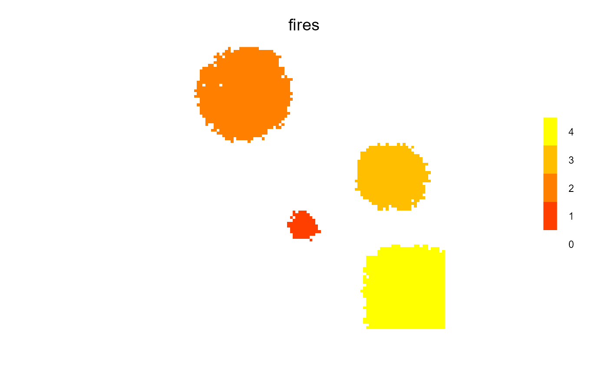## Using alternative algorithm, not probabilistic diffusion ## Will give exactly correct sizes, yet still with variability ## within the spreading (i.e., cells with and without successes) seed <- sample(1e6, 1) set.seed(seed) startCells <- startCells[1:4] maxSizes <- rexp(length(startCells), rate = 1 / 500) fires <- spread(hab, loci = startCells, 1, persistence = 0, neighProbs = c(0.5, 0.5, 0.5) / 1.5, mask = NULL, maxSize = maxSizes, directions = 8, iterations = 1e6, id = TRUE, plot.it = FALSE, exactSizes = TRUE); all(table(fires[fires > 0][]) == floor(maxSizes))#> [1] TRUE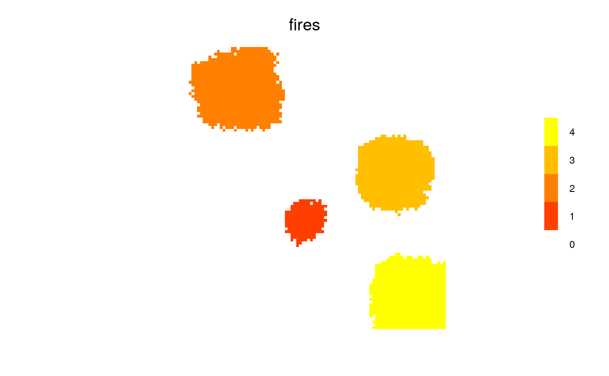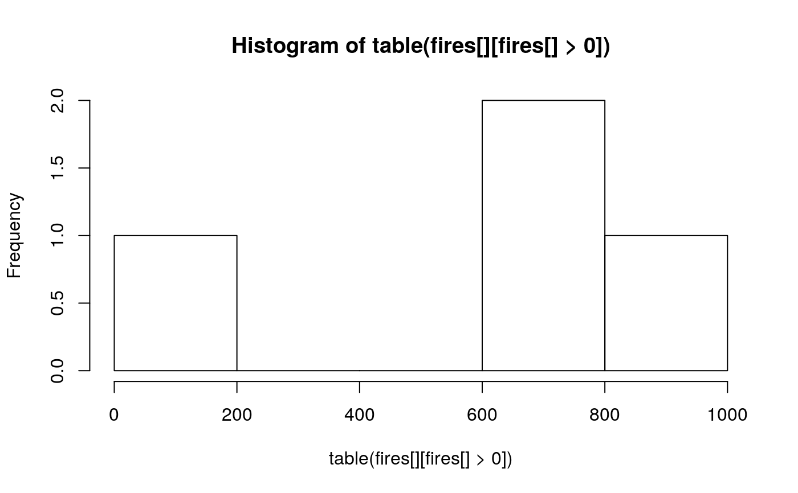## Example with relativeSpreadProb ... i.e., a relative probability spreadProb ## (shown here because because spreadProb raster is not a probability). ## Here, we force the events to grow, choosing always 2 neighbours, ## according to the relative probabilities contained on hab layer. ## ## Note: `neighProbs = c(0,1)` forces each active pixel to move to 2 new pixels ## (`prob = 0` for 1 neighbour, `prob = 1` for 2 neighbours) ## ## Note: set hab3 to be very distinct probability differences, to detect spread ## differences hab3 <- (hab < 20) * 200 + 1 seed <- 643503 set.seed(seed) sam <- sample(which(hab3[] == 1), 1) set.seed(seed) events1 <- spread(hab3, spreadProb = hab3, loci = sam, directions = 8, neighProbs = c(0, 1), maxSize = c(70), exactSizes = TRUE) # Compare to absolute probability version set.seed(seed) events2 <- spread(hab3, id = TRUE, loci = sam, directions = 8, neighProbs = c(0, 1), maxSize = c(70), exactSizes = TRUE) clearPlot()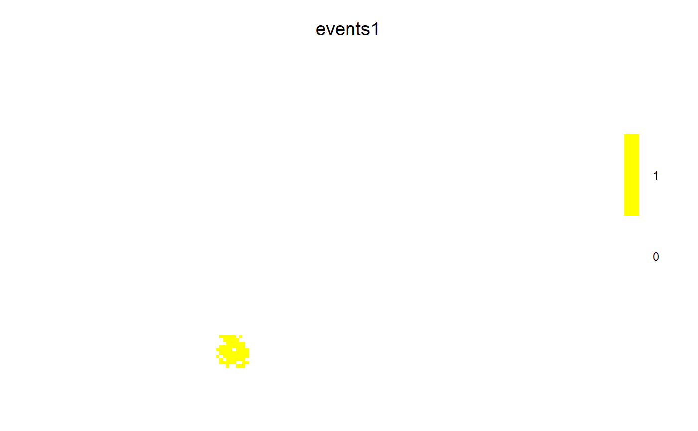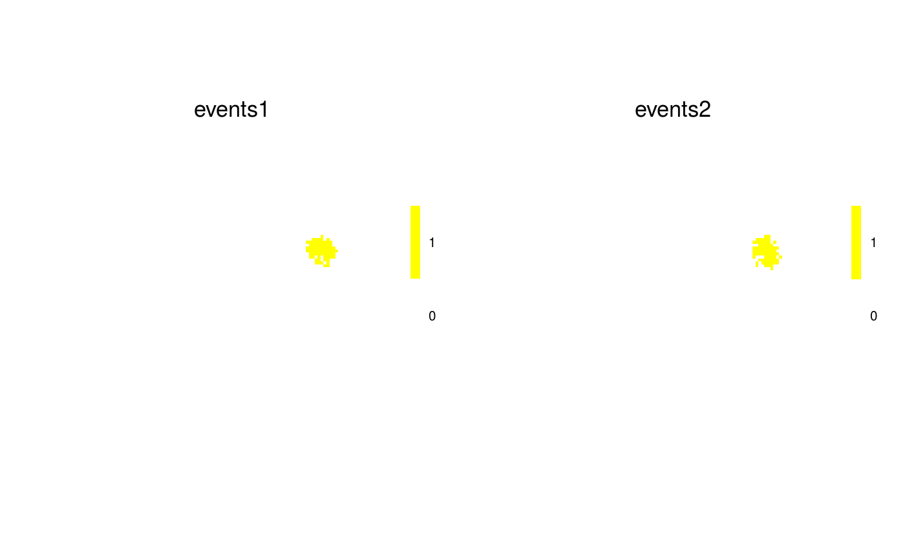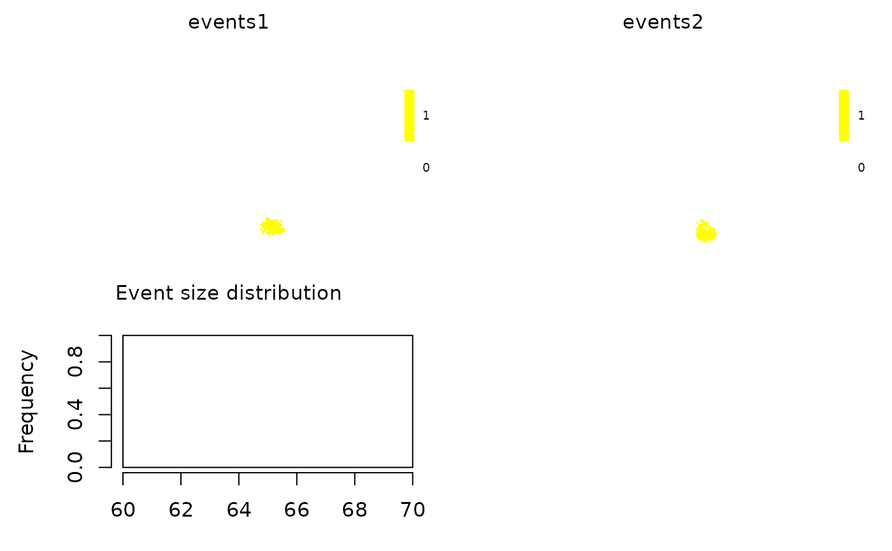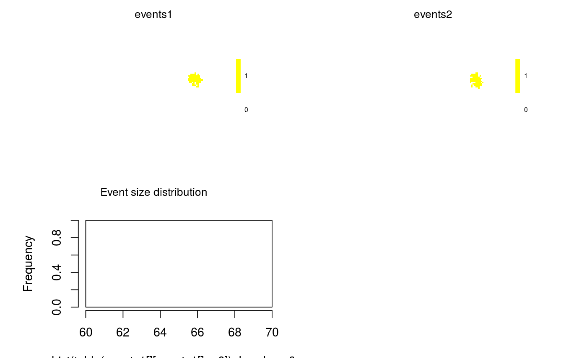# Check that events1 resulted in higher hab3 pixels overall # Compare outputs -- should be more high value hab pixels spread to in event1 # (randomness may prevent this in all cases) hab3[events1[] > 0]#> [1] 1 1 1 1 1 1 1 1 1 1 1 1 1 1 1 1 1 1 1 #> [20] 1 1 1 1 1 1 1 1 1 1 1 1 1 1 1 1 1 1 1 #> [39] 1 1 1 1 1 1 1 1 1 1 1 1 1 1 1 1 1 1 1 #> [58] 1 1 1 1 201 1 1 201 201 201 1 201 201hab3[events2[] > 0]#> [1] 1 1 1 1 1 1 1 1 1 1 1 1 1 1 1 1 1 1 1 #> [20] 1 1 1 1 1 1 1 1 1 1 1 1 1 1 1 1 1 1 1 #> [39] 1 1 1 1 1 1 1 1 1 1 1 1 1 201 1 1 1 1 1 #> [58] 1 201 201 1 1 1 1 1 1 201 201 1 201sum(hab3[events1[] > 0]) >= sum(hab3[events2[] > 0]) ## should be usually TRUE#> [1] TRUE